未経験から「案件に入れる」までのバイブコーディング入門
プログラミング未経験の人が、AI（Claude Code）を使って開発案件を手伝えるようになるまでの手順書です。
ゴール：仕事を1件受け取って、直して、確認して、提出する。この1周を自分で回せるようになること。
やらないこと：文法の勉強、設計の理論、AI なしでコードを書く練習。今は要りません。
0. まず、何を作るのかを見る
手順から入ると「言われたとおりに手を動かしただけ」で終わります。先に完成形を見てください。
0-1 今回いじるアプリ
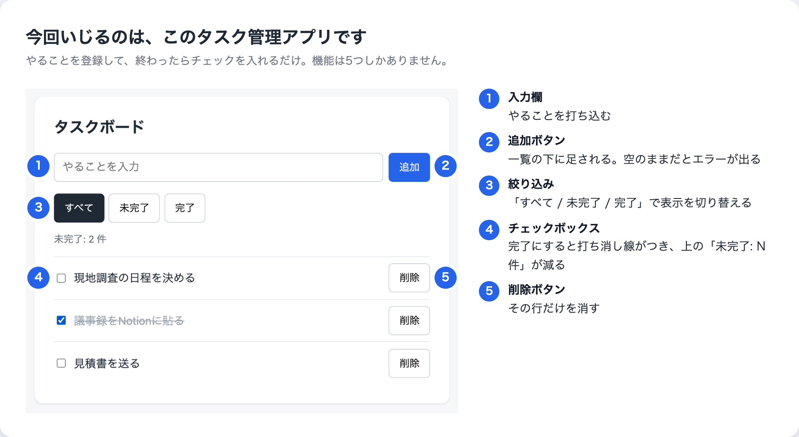
やることを登録して、終わったらチェックを入れるだけのアプリです。実際に動いています。
→ vibe-taskboard-practice.pages.dev
いま開いて、タスクを2〜3件登録してみてください。そのままブラウザをリロードしてみてください。
0-2 今回頼まれた改修
リロードすると、登録したタスクが全部消えたはずです。これが今回の依頼です。
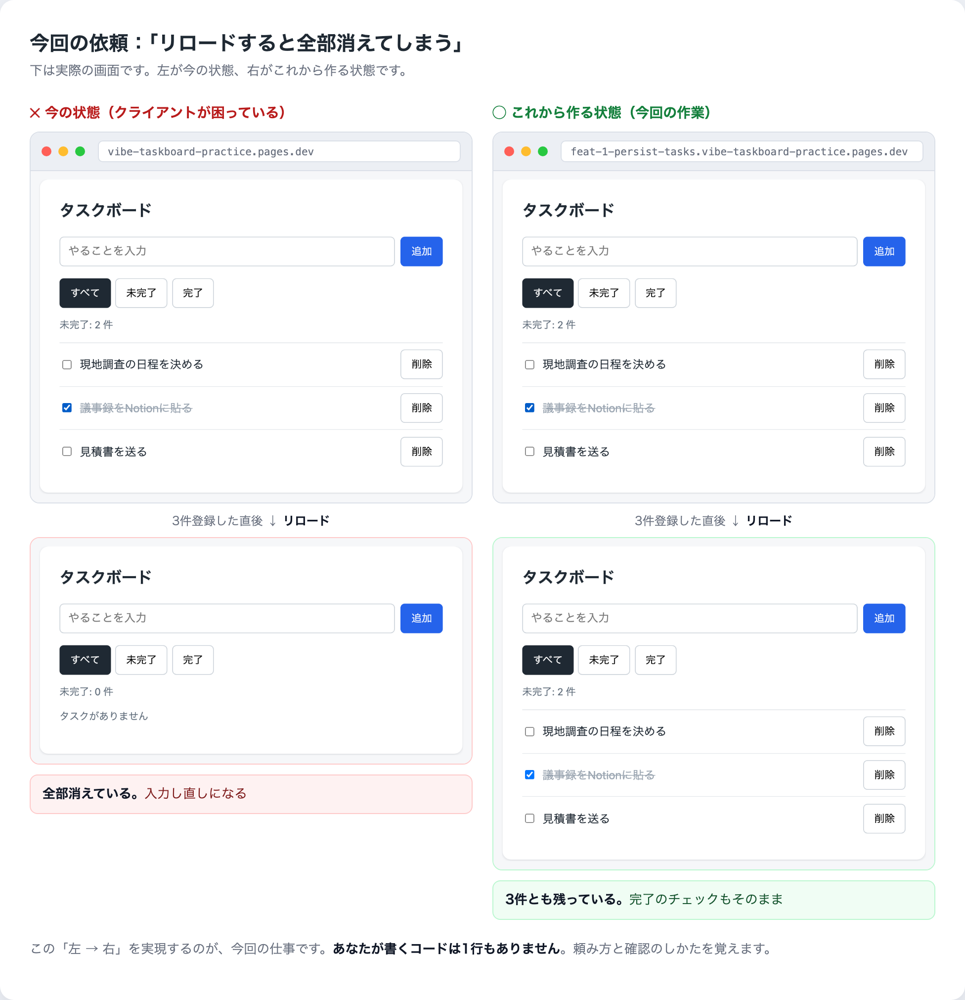
クライアントからの依頼 「入力したタスクが、ブラウザを閉じたり更新したりすると全部消えてしまいます。残るようにしてください。」
この「左 → 右」を実現して提出するまでが、今回やることです。
0-3 何が起きているのか、どう直すのか
先に方針だけ共有しておきます。理解しなくても進めますが、知っておくと指示の意味が分かります。
| 今の状態 | 入力したタスクを、画面を表示している間だけ覚えている。ブラウザを閉じると忘れる |
| 原因 | 「どこにも書き残していない」から。メモを取らずに暗記しているのと同じ |
| 対応方針 | ブラウザ自身が持っている保存場所に書き残し、次に開いたときに読み戻す |
原因の特定も実装も、AI がやります。あなたがやるのは次の2つです。
- 「何ができたら完了か」を押さえる（＝依頼に書かれた完了条件を読む）
- 本当にそうなったかを自分の手で確認する（＝プレビューでリロードしてみる）
0-4 ここから先の流れ
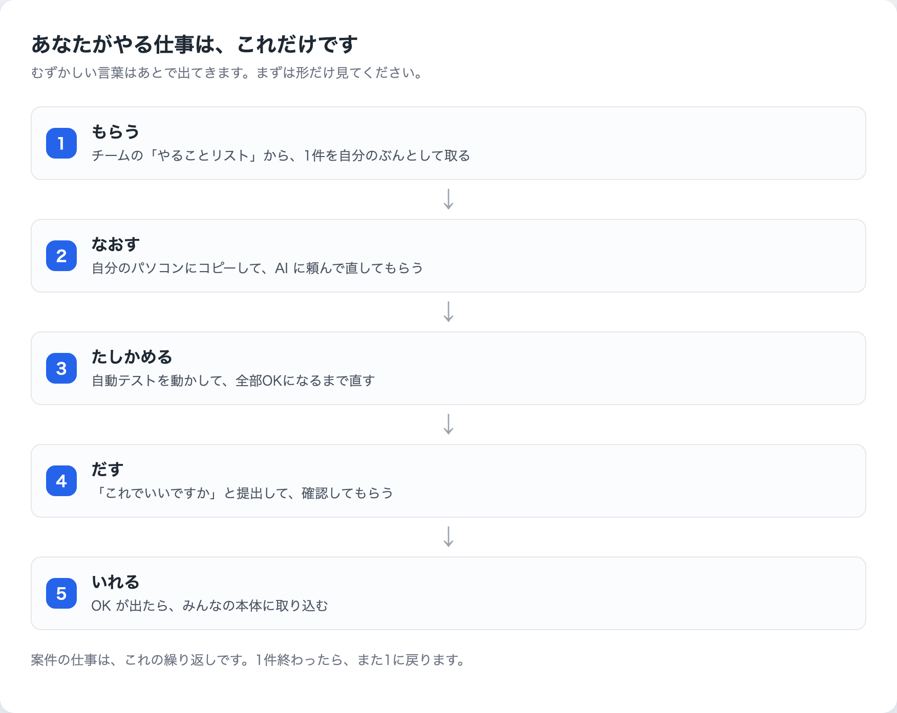
言葉を1つも知らなくても、形は分かるはずです。この記事は、この5つを1周するためだけの記事です。
新しい言葉は、必要になった場所で1つずつ出てきます。今は覚えなくて大丈夫です。
1. 準備（おまじない）
ここは理解しなくていい章です。コマンドを貼って、最後に確認するだけ。1回やれば二度とやりません。
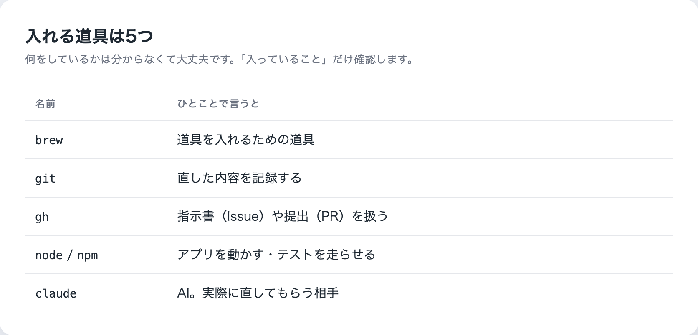
1-1 ターミナルを開く
⌘ + Space を押す → ターミナル と打つ → return。
黒い（または白い）文字だけの窓が出ます。以下、この窓に貼り付けます。
記事のコマンドの行頭に
$がある場合、$は打ちません。その後ろをコピーします。
1-2 貼るだけ（おまじない）
上から順に、1つずつ貼って return。
# 1つ目（5〜10分かかります。パスワードを聞かれたら Mac のログインパスワードを入力。画面に文字は出ません）
/bin/bash -c "$(curl -fsSL https://raw.githubusercontent.com/Homebrew/install/HEAD/install.sh)"
# 2つ目（M1〜M4 の Mac で必要）
echo 'eval "$(/opt/homebrew/bin/brew shellenv)"' >> ~/.zprofile
eval "$(/opt/homebrew/bin/brew shellenv)"
# 3つ目
brew install git gh node
# 4つ目
npm install -g @anthropic-ai/claude-code
1-3 入ったか確認する（ここだけ大事）
brew --version
node -v
npm -v
git --version
gh --version
claude --version
数字が6回返ってくれば完了です。
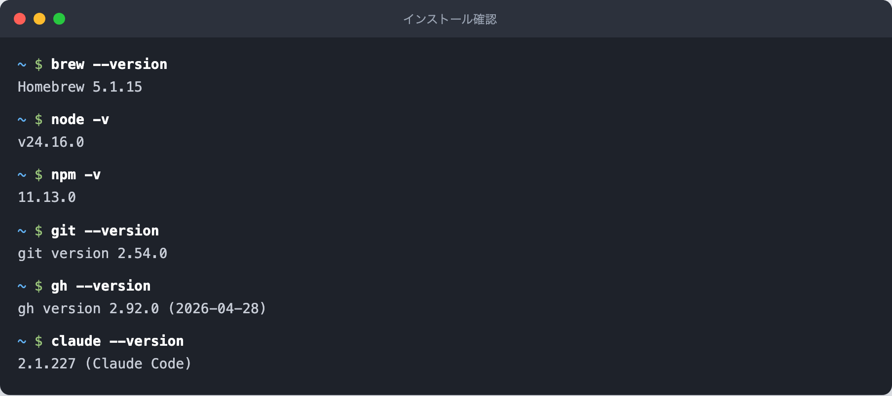
command not found と出たら：その行のインストールをもう一度実行。それでも出たら、エラー文をそのままコピーして人に送ってください。
1-4 Windows の人（おまじない）
Windows のままでは同じコマンドが動きません。中に Linux を用意します。
- スタートメニューで「PowerShell」を検索 → 右クリック → 管理者として実行
wsl --installを実行 → 再起動- スタートメニューの「Ubuntu」を起動 → ユーザー名とパスワードを決める
- 以降はこの Ubuntu の窓で、1-2 と同じことをします
ファイルは Linux 側のホーム（~/）に置いてください。Windows 側（/mnt/c/...）に置くと極端に遅くなります。
2. ターミナルとフォルダの話
さっき開いた黒い窓を ターミナル と呼びます。
ターミナルは、マウスでやっている操作を、全部文字でやるための窓です。 フォルダを開く・中身を見る・アプリを起動する。Finder でクリックしてやっていることを、名前を打って指示します。
見た目が地味なだけで、特別なことは何もしていません。
2-1 パソコンの中身は、フォルダの入れ子
パソコンの中は、フォルダ（＝ディレクトリとも言います）が入れ子になっているだけです。 ターミナルでやることは、その入れ子のどこかに移動して、中を見る、これだけです。
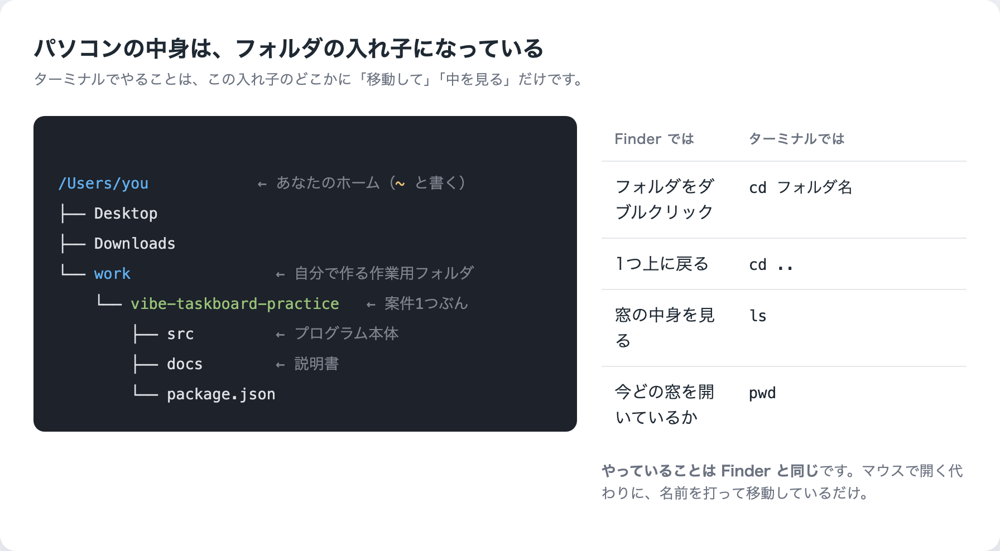
~（チルダ）は「自分のホームフォルダ」の省略記号です。~/work と書いたら「ホームの中の work フォルダ」という意味になります。
2-2 画面の読み方
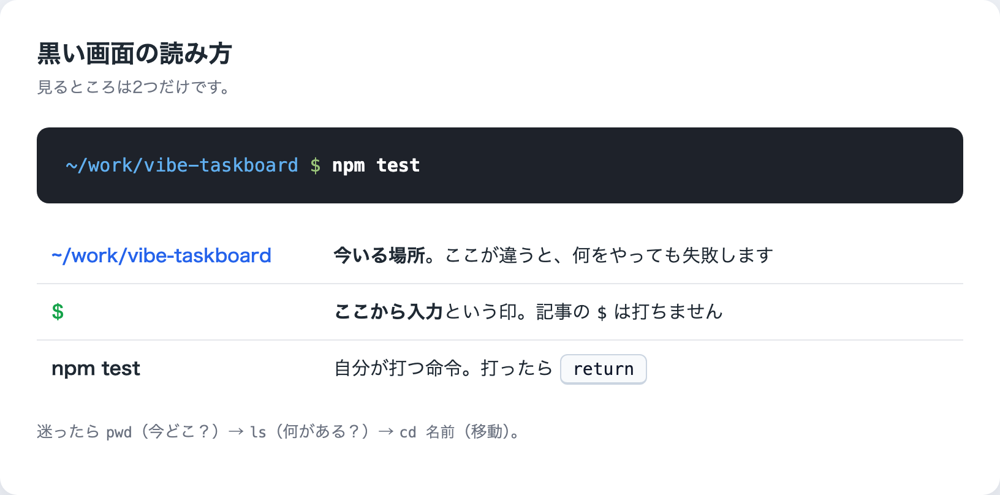
2-3 覚える命令は3つ
| 命令 | 意味 |
|---|---|
pwd |
今どこにいる？ |
ls |
ここに何がある？ |
cd 名前 |
そこに移動する（cd .. で1つ戻る） |
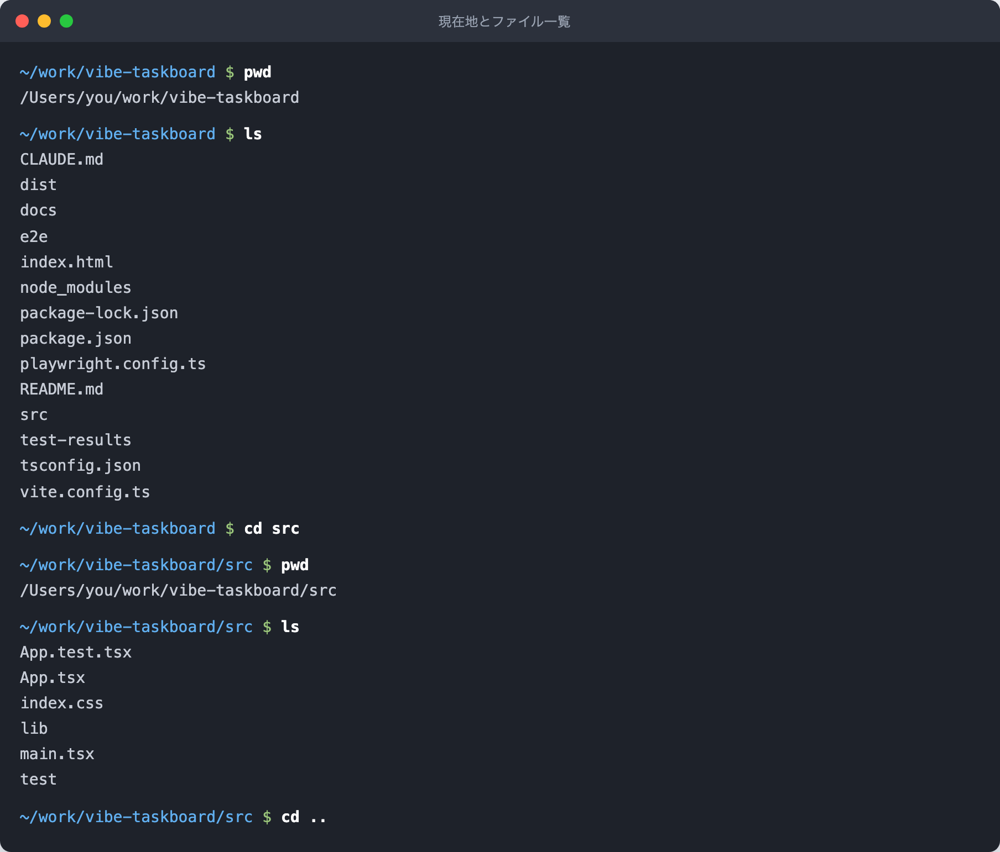
うまくいかない時の9割は「違う場所にいる」だけです。pwd で今いる場所を確認してください。
2-4 キー操作
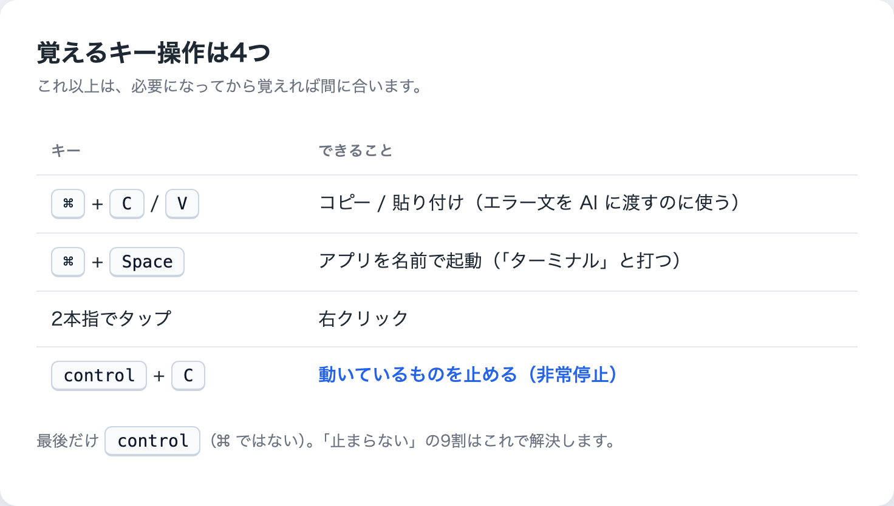
3. AI に頼む（Claude Code）
3-1 作業用のフォルダを作って、そこで起動する
まず、案件のファイルを置く場所をホームの下に作ります。
mkdir -p ~/work && cd ~/work
mkdir -p ~/work… ホームの中にworkフォルダを作る（すでにあれば何もしない）&&… 「前のが成功したら、次を実行」cd ~/work… 作ったworkに移動する
今どこにいるか確認します。
pwd
/Users/あなたの名前/work と出れば正解です。ここで AI を起動します。
claude
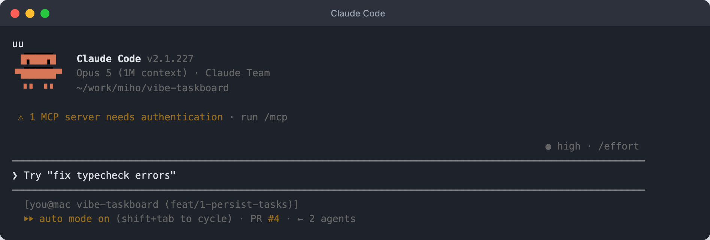
起動画面に出ているフォルダ名が、今いる場所です。ここが違うと、AI は関係ないファイルを触り始めます。
3-2 練習環境を作ってもらう
ここから先、コマンドは基本的に自分で打ちません。 日本語で頼めば、AI が実行します。
最初の依頼はこれです。この2行をそのまま貼ってください。
練習環境を作ってください。
bash <(curl -fsSL https://raw.githubusercontent.com/naogify/vibe-taskboard-practice/main/setup/setup-student.sh)
途中で GitHub のログイン画面が出たら、表示された8文字のコードをブラウザに貼って承認します（初回だけ）。 あとは5〜10分ほど待つだけです。終わると、あなた専用の練習環境ができています。
| できるもの | 中身 |
|---|---|
| あなたのリポジトリ | あなたの名前/vibe-taskboard-practice（自分専用のコピー） |
| あなたのボード | 未着手 / 作業中 / 完了 の3列に、依頼が3件並んだ状態 |
| 手元のフォルダ | ~/work/vibe-taskboard-practice（動かせる状態） |
何をしているかは覚えなくて大丈夫です。 他の受講生とぶつからないように、自分専用の場所を用意しているだけです。
手元で動かして見たいときは、AI にこう頼みます。
ローカルで動かして、開く URL を教えてください。
http://localhost:5173 のような URL が返ってきます。
localhostとは 「自分のパソコンの中」という意味です。この URL は他の人には見えません。自分だけの確認用。
止めたいときは、ターミナルで control + C。
3-3 話しかける
日本語で普通に頼みます。
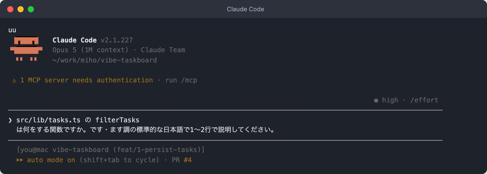
return で送ると、答えが返ってきます。
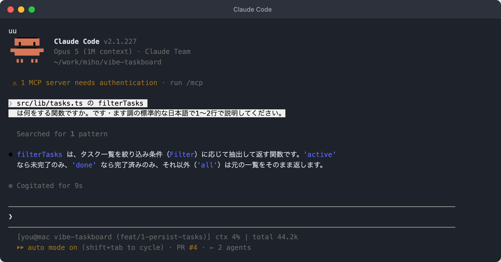
直してもらうと、どこをどう変えたかが表示されます。緑の + が付いた行が、追加された行です。
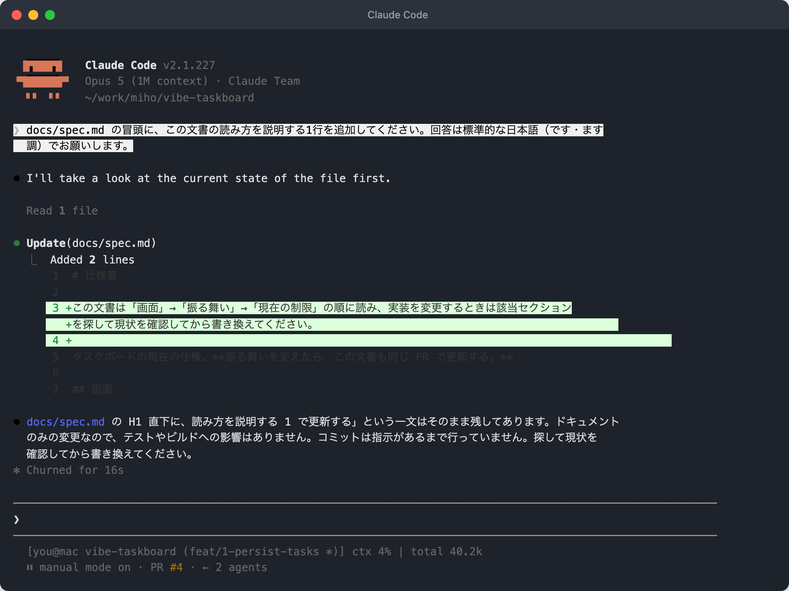
3-4 覚える操作は3つ
| 操作 | 効果 |
|---|---|
文字を打って return |
頼む |
Esc |
止める（変な方向に走り出したら、すぐ押す） |
⌘ + V |
貼り付け（エラー文はこれで渡す） |
3-5 頼み方は雑でいい
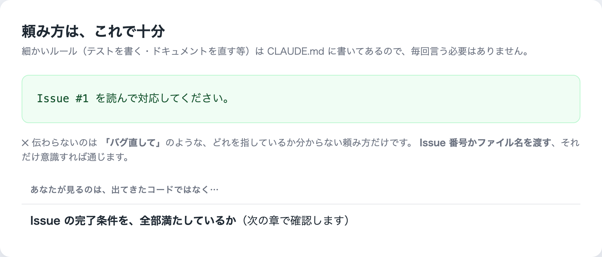
「テストも書いて」「ドキュメントも直して」は、毎回言わなくて大丈夫です。
プロジェクトのルール（CLAUDE.md）に書いてあり、AI は毎回それを読んでいます（第8章で作ります）。
あなたが意識するのは1つだけです。
出てきたコードの良し悪しではなく、「頼んだことが全部できているか」を見る。
3-6 やってはいけないこと
- 中身を見ずに「できました」と報告する
- エラー文を自分の言葉に要約して伝える（そのままコピペが正解）
4. 言葉あわせ
ここから、現場で使われている呼び方が出てきます。新しい作業は増えません。0-4 で見た5つに名前が付くだけです。
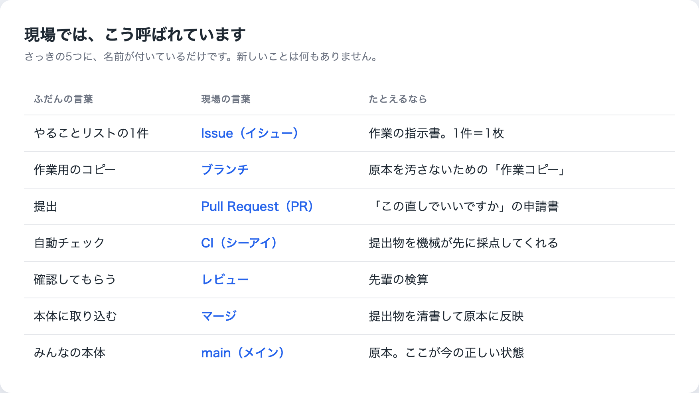
もう1つだけ。GitHub は、この仕組み全部が置いてある Web サービスです。「やることリスト」も「提出」も、ここでやり取りします。
GitHub のアカウントだけ用意しておく
- github.com/signup でアカウントを作る（ユーザー名は仕事で使われます。ふざけた名前にしない）
- 2要素認証を設定する（GitHub では必須。スマホに認証アプリを入れて QR を読む）
ターミナルとの接続は、3-2 のスクリプトがやってくれます。 自分で gh auth login を打つ必要はありません。
5. 実演：1周やってみる
ここが本編です。0〜4章は、この章のための準備でした。
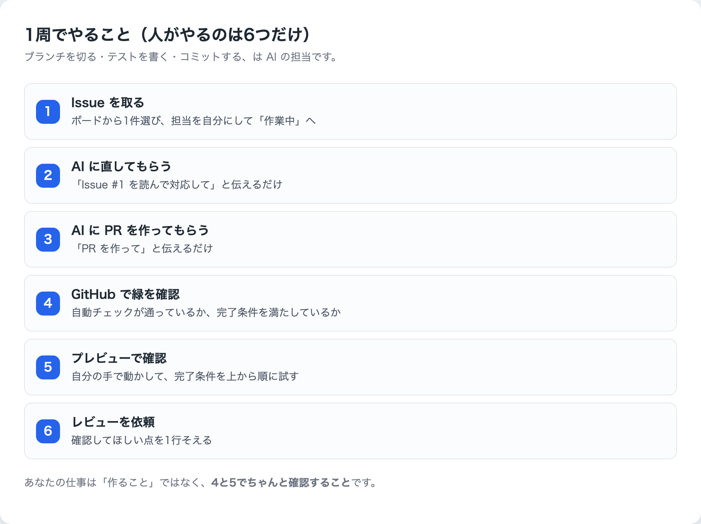
ブランチを切る・テストを書く・コミットするは AI の担当です。あなたの仕事は、受け取ることと確認することです。
出てくるものは、全部この1件につながっている
この章では、依頼・カード・作業コピー・提出・プレビューと、いろいろな名前が出てきます。 ただし指しているものは1つです。ここを掴んでおくと迷子になりません。
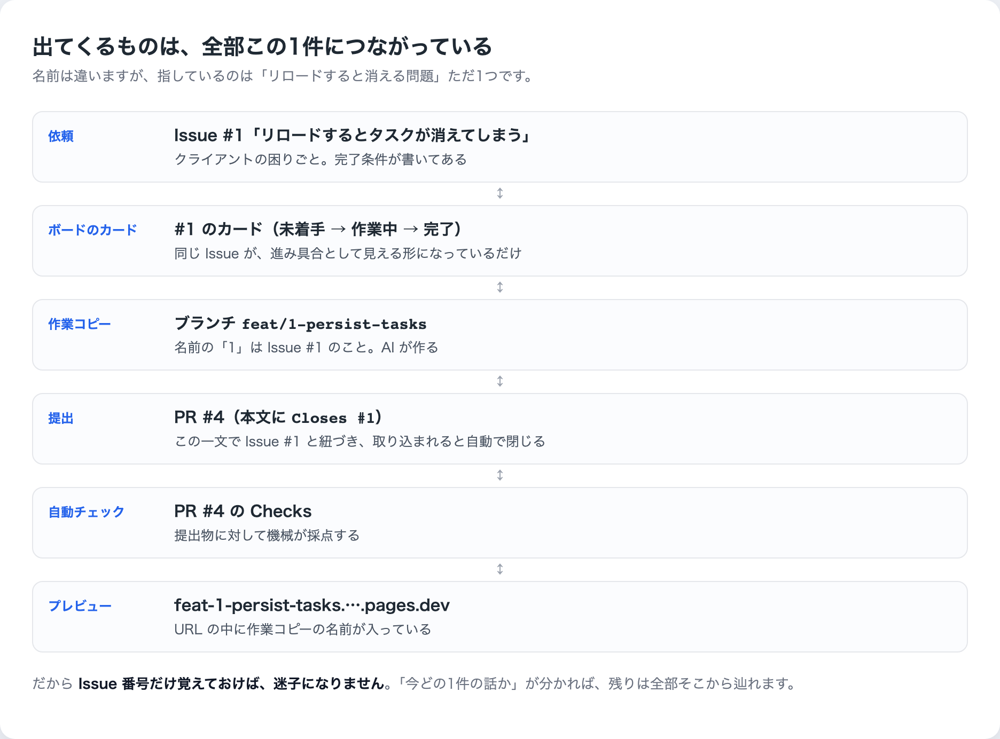
Step 1 依頼（Issue）を受け取る
3-2 で用意されたあなたのボードには、依頼が3件、3つの列（未着手 / 作業中 / 完了）で並んでいます。
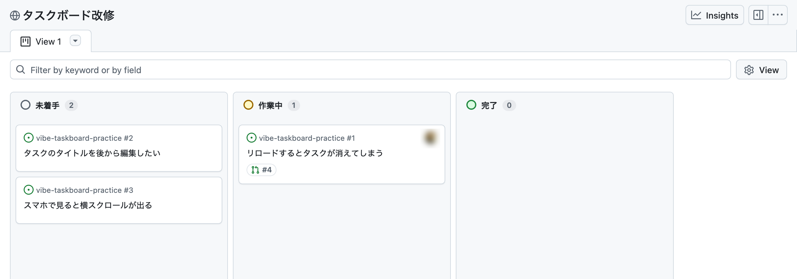
自分がやる1件を選び、担当を自分にして「作業中」に動かします（上の画像の #1 がその状態です）。カードを右にドラッグするだけです。
これは事務作業ではなく、「今これを私がやっています」を全員に伝えるための行動です。やらないと、他の人と作業がぶつかります。
依頼の一覧は、こう見えます。
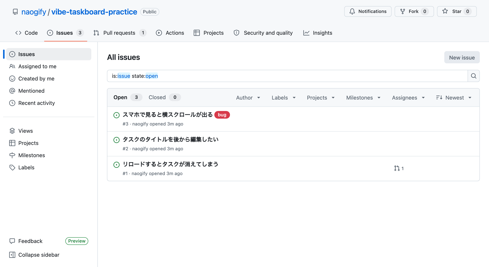
選んだ依頼を開いて、完了条件を読みます。ここがこの後ずっと基準になります。
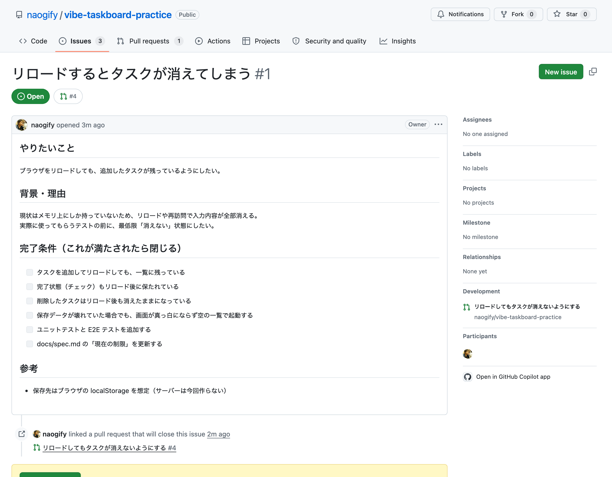
完了条件が書いていなければ、始める前に聞いてください。 「どうなったら完了ですか？」は、優秀な人の質問です。手を動かしてから聞くと、作り直しになります。
Step 2 AI に直してもらう
さっきのフォルダで AI を起動して、伝えるのは1行です。
cd ~/work/vibe-taskboard-practice
claude
Issue #1 を読んで対応してください。
これだけで、AI は次を全部やります（CLAUDE.md にそう書いてあるからです）。
- 依頼の内容を読む
- 作業用のコピー（ブランチ）を作る
- 直す
- テストを追加して、通るまで直す
- ドキュメントを更新する
途中で違う方向に走り出したら Esc で止めて、「そうではなく、○○してほしい」と言い直します。
終わったら、手元でも見ておきます。
ローカルで動かして、確認用の URL を教えてください。
Step 3 提出（PR）も作ってもらう
PR を作ってください。
AI がコミットして、提出（PR）まで作り、URL を返します。その URL をブラウザで開いてください。ここからがあなたの仕事です。
Step 4 GitHub で確認する
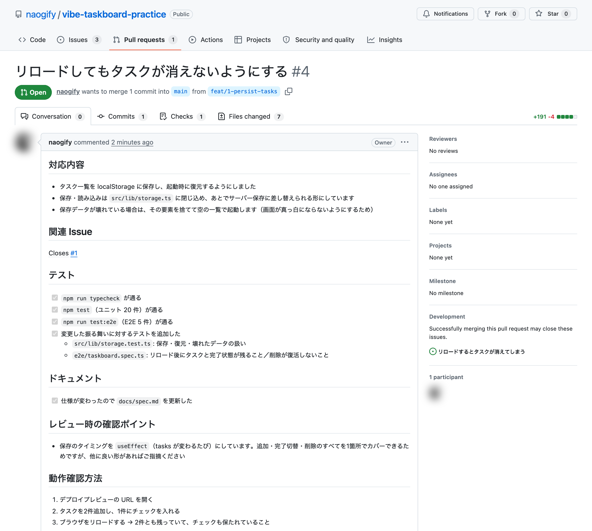
① 自動チェックが緑か
「Checks」タブを開きます。緑のチェックが付いていれば OK です。
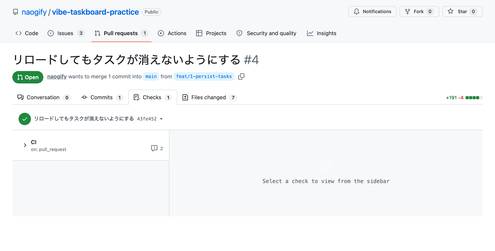
赤いときは、AI に一言。
CI が落ちています。ログを見て直してください。
止まった場所は、Actions の画面で確認できます。
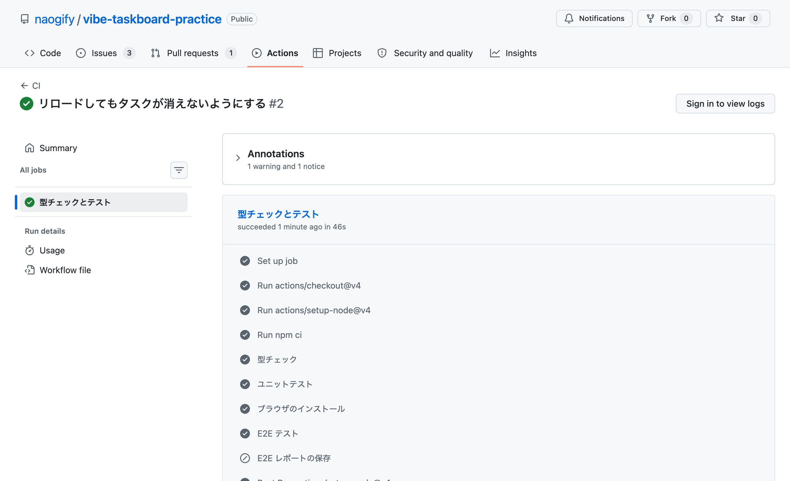
② 完了条件を満たしているか
依頼に書かれていた完了条件と、PR の内容を見比べます。足りなければ「◯◯が抜けています」と伝えるだけです。
③ 知らないファイルが混ざっていないか
「Files changed」タブを開いて、変更されたファイルの名前だけ見ます。.env や、頼んでいないファイルが入っていたら要注意です。
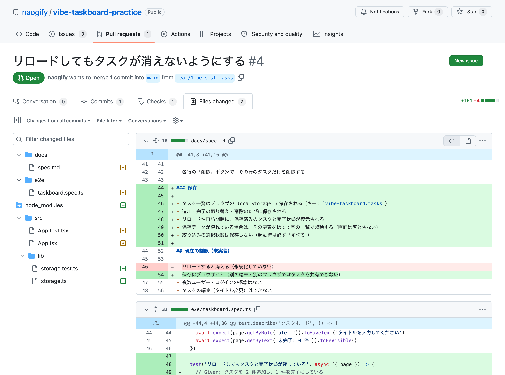
Step 5 プレビューで自分の手で確認する
整備されたプロジェクトでは、提出ごとにその変更だけを反映した確認用の URL が自動で作られ、PR にリンクが貼られます。
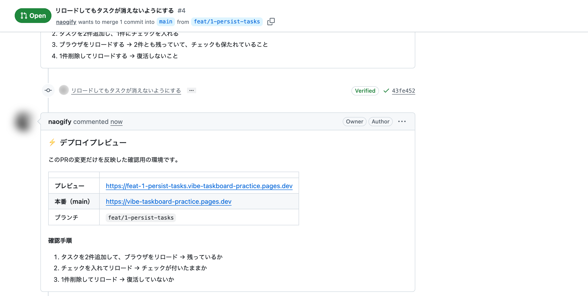
このリンクを開いて、完了条件を上から順に試します。
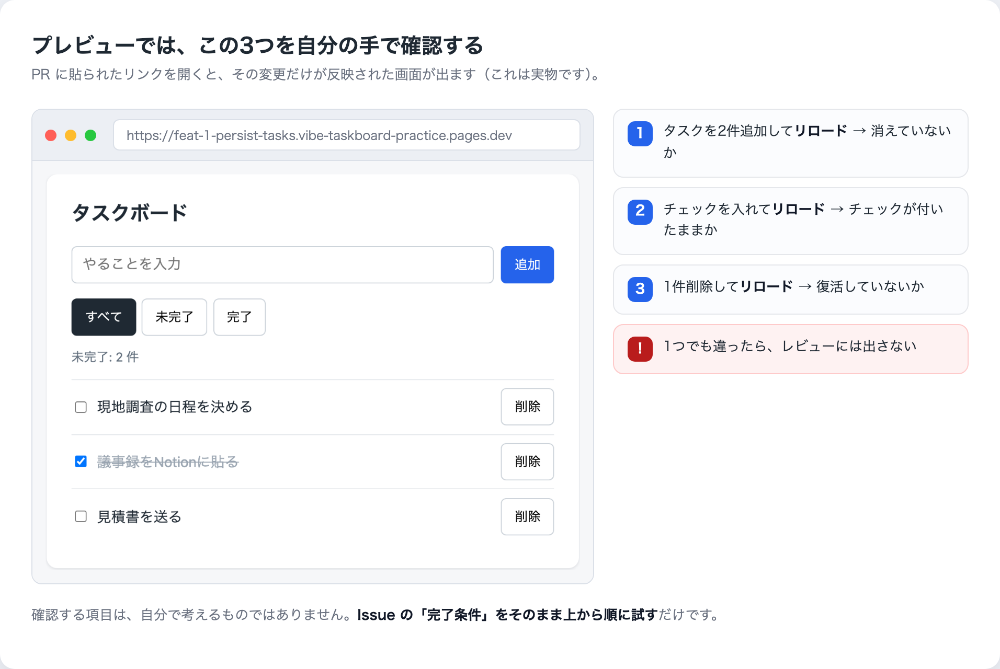
ここを飛ばす人は、必ず事故を起こします。 自動チェックが緑でも、画面が壊れていることはあります。機械が見ているのは「テストに書いてあること」だけです。
Step 6 レビューを依頼する
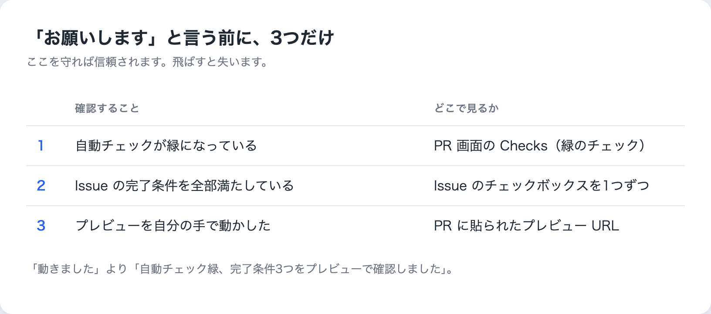
PR 画面の「Reviewers」で相手を指定し、ひとこと送ります。
Issue #1 の PR を出しました。確認お願いします 🙏
https://github.com/naogify/vibe-taskboard-practice/pull/4
・自動チェックは緑です
・プレビューで、完了条件3つを確認しました
・保存のタイミングだけ、これでいいか相談したいです
「相談したい点」を1つ書くのがコツです。相手は見る場所が分かって助かります。
このあとの取り込み（マージ）は、確認する側の仕事です。あなたの1周はここで終わりです。
指摘が来たら、その内容をそのまま AI に渡して直してもらい、また Step 4 に戻ります。
6. 報告のしかた
案件から外される理由は、技術力ではなく報告がないことです。
詰まったとき（15分ルール）
15分考えて分からなかったら聞く。この形で送ります。
【やろうとしていること】Issue #1 の対応
【やったこと】AI に PR を作ってもらった
【起きたこと】CI が赤いままで、直し方が分からない
（エラー文をそのまま貼る）
【試したこと】AI に「直して」と2回頼んだが同じところで落ちる
エラー文は要約せずそのまま。これだけで返事の速度が変わります。
1日の終わり
【今日】Issue #1 の対応、PR #4 を作成
【状態】自動チェック緑・確認待ち
【明日】指摘対応 → Issue #2 に着手
【困っていること】特になし
言い換え表
| ✕ | ◯ |
|---|---|
| できました！ | PR #4 出しました。チェック緑、プレビューで完了条件3つ確認済みです |
| 動きません | CI が落ちています（エラー文貼付） |
| （3日間なにも言わない） | まだ調査中です。明日の午前に状況を共有します |
| たぶん大丈夫だと思います | ここは自信がないので、確認をお願いしたいです |
分からないものを「分かりません」と言える人は伸びます。 AI を使うと、自分が理解していないコードができます。それは普通のことで、隠すことだけが問題です。
7. うまくいかないとき
| 症状 | 原因 | 対処 |
|---|---|---|
command not found |
入っていない | 1-2 のその行をやり直す |
no such file or directory |
違う場所にいる | pwd で確認 → cd で移動 |
npm install で止まる |
ネットワークか権限 | エラー文をそのまま AI に貼る |
Permission denied (publickey) |
GitHub とつながっていない | gh auth login をやり直す |
| 自動チェックが赤い | 実装かテストの不足 | AI に「CI が落ちています。直して」 |
| AI が変な方向に走る | どれを指しているか曖昧 | Esc → Issue 番号かファイル名を渡し直す |
| 画面が固まった | 何かが実行中 | control + C |
共通の対処：エラー文をそのままコピーして AI に貼り、「どういう意味？どう直す？」と聞く。8割これで終わります。
8.【管理者向け】受け入れ側の準備
ここからは、未経験者を迎える側（PM・リード）向けです。本人の努力より、環境の整備で決まります。
前章までで未経験者が「1行頼むだけ」で済んでいたのは、以下が用意されているからです。
8-1 CLAUDE.md を置く
リポジトリ直下に置くと、AI が毎回自動で読みます。新人に渡す説明書を AI にも渡す、という考え方です。
### 1. コードを変更したら、必ずテストを追加・更新する
- ロジックの変更 → ユニットテスト
- 画面の振る舞いの変更 → コンポーネントテスト
- 操作フローの変更 → E2E テスト（Given/When/Then で書く）
- テストを書かずに「実装できました」と報告してはいけない
### 2. コミット前にローカルで全部通す
npm run typecheck / npm test / npm run test:e2e
落ちたテストを削除・スキップして通すのは禁止
### 3. 振る舞いが変わったら、同じ PR でドキュメントも直す
- 仕様 → docs/spec.md / 手順・環境変数 → README.md
### 4. コメントを日本語で書く（「なぜ」を書く）
### 5. main で作業しない（feat/ + Issue番号でブランチを切る）
### 6. 1 Issue = 1 ブランチ = 1 PR（頼まれていない変更を混ぜない）
E2E は Given / When / Then で書かせると、非エンジニアでも読める仕様書になります。
test('リロードしてもタスクが残っている', async ({ page }) => {
// Given: タスクを1件追加している
await page.getByLabel('タスク名').fill('見積を送る')
await page.getByRole('button', { name: '追加' }).click()
// When: リロードする
await page.reload()
// Then: 残っている
await expect(page.getByText('見積を送る')).toBeVisible()
})
8-2 手順をスキルにする
毎回口で説明している手順は、.claude/skills/create-pr/SKILL.md に置けます。AI の中で /create-pr と打つだけで、その順番どおりに動きます。
---
name: create-pr
description: テストを通してから Pull Request を作成する
---
1. git status / git diff で変更内容を確認（.env やデバッグコードが無いか）
2. typecheck → test → test:e2e を全部通す（1つでも赤ければ PR は作らない）
3. feat/<Issue番号>-<内容> でブランチを切る
4. 変更ファイルを明示して commit（git add . は使わない）
5. push → gh pr create（テンプレートに沿って記入）
6. gh pr checks --watch で緑を確認
7. PR の URL・確認したこと・プレビュー URL を報告する
未経験者が「PR を作って」の1行で済むのは、これがあるからです。
8-3 main を保護する
口で言っても守られません。GitHub 側で止めます。
Settings → Branches → Add branch protection rule（対象 main）
| 設定 | 効果 |
|---|---|
| Require a pull request before merging | 直接の変更を禁止 |
| Require approvals（1人以上） | 無確認のマージを禁止 |
| Require status checks to pass | 自動チェックが緑でないとマージ不可 |
| Require conversation resolution | 指摘が未解決のままマージ不可 |
8-4 自動チェック（CI）を置く
.github/workflows/ci.yml を置くだけで、提出のたびに自動テストが走ります。
name: CI
on:
pull_request:
push:
branches: [main]
jobs:
test:
name: 型チェックとテスト
runs-on: ubuntu-latest
steps:
- uses: actions/checkout@v4
- uses: actions/setup-node@v4
with:
node-version: 22
cache: npm
- run: npm ci
- run: npm run typecheck
- run: npm test
- run: npx playwright install --with-deps chromium
- run: npm run test:e2e
ここで付けたジョブ名（型チェックとテスト）を、8-3 の status checks に指定します。
8-5 デプロイプレビューを用意する（Cloudflare Pages）
未経験者を受け入れるなら、これが一番効きます。 「動くか」を口頭ではなく URL で確認できるようになります。
この記事の練習用リポジトリも、Cloudflare Pages で動いています。
- 本番（main）: https://vibe-taskboard-practice.pages.dev
- プレビュー（PR）: https://feat-1-persist-tasks.vibe-taskboard-practice.pages.dev
設定（5分）
- Cloudflare ダッシュボード → Workers & Pages → Create → Pages → Connect to Git
- リポジトリを選ぶ
- ビルド設定：コマンド
npm run build/ 出力ディレクトリdist - 保存すると、以降 PR ごとにプレビュー URL が自動生成され、PR にコメントが付きます
CLI から入れる場合（GitHub 連携なしで、Actions から流す構成）：
# .github/workflows/preview.yml
name: Deploy Preview
on: pull_request
jobs:
deploy:
runs-on: ubuntu-latest
steps:
- uses: actions/checkout@v4
- uses: actions/setup-node@v4
with:
node-version: 22
cache: npm
- run: npm ci && npm run build
- uses: cloudflare/wrangler-action@v3
with:
apiToken: ${{ secrets.CLOUDFLARE_API_TOKEN }}
accountId: ${{ secrets.CLOUDFLARE_ACCOUNT_ID }}
command: pages deploy dist --project-name=<プロジェクト名> --branch=${{ github.head_ref }}
環境変数は Cloudflare 側の設定画面で入れ、.env はコミットしない（.gitignore に .env を入れる）。
8-6 受講生を増やす（1人1環境）
複数人に同時に練習させるなら、全員が同じリポジトリを触る形は避けてください。 取り合いになり、誰の PR か分からなくなります。
練習用リポジトリには、受講生ごとに環境を丸ごと用意するスクリプトを入れてあります。受講生がやるのは、AI にこの2行を渡すことだけです。
練習環境を作ってください。
bash <(curl -fsSL https://raw.githubusercontent.com/naogify/vibe-taskboard-practice/main/setup/setup-student.sh)
スクリプトが裏側でやること（受講生には説明不要）：
| 手順 | 内容 |
|---|---|
| 1 | 道具が入っているか確認（git / gh / node / npm） |
| 2 | GitHub にログイン（ボード作成の権限もまとめて取得） |
| 3 | 受講生のアカウントにリポジトリを複製（テンプレートから） |
| 4 | 依頼（Issue）を setup/issues/*.md から作成 |
| 5 | ボードを作り、カンバン表示（未着手 / 作業中 / 完了）にして依頼を並べる |
| 6 | main を保護（PR 必須・自動チェック必須） |
| 7 | 手元にコピーして npm install とテスト用ブラウザの導入 |
何度実行しても壊れません。 すでにあるものは作り直さずに使います。
講師の手元でやること
# 全員の状況をまとめて見る（リポジトリ・依頼の数・ボード・PR・自動チェック）
bash setup/check.sh alice bob carol
# 依頼の内容を差し替える（次の受講生から反映）
$EDITOR setup/issues/01-persist.md
受講生の環境でも、レビュー承認は 0 件にする
ひとりで練習する以上、自分の PR を自分で承認できないと1周が終わりません。 自動チェック（CI）必須は残したまま、承認だけ 0 件にしてあります。実務のチームでは 1 件以上に戻してください。
プレビューも配りたい場合
Cloudflare の API トークンを渡して実行すると、受講生のリポジトリにシークレットが設定され、PR ごとにプレビュー URL がコメントされるようになります。
CLOUDFLARE_API_TOKEN=xxxxx CLOUDFLARE_ACCOUNT_ID=yyyyy \
bash <(curl -fsSL https://raw.githubusercontent.com/naogify/vibe-taskboard-practice/main/setup/setup-student.sh)
トークンは Cloudflare ダッシュボード → My Profile → API Tokens → Cloudflare Pages: Edit の権限で作ります。
渡さなくても練習は最後まで進められます（手元の npm run dev で確認できます）。
8-7 Supabase を使うときの3つの約束
① RPC を使わない。テーブルへのクエリで書く
// ◯ クエリで書く
const { data } = await supabase.from('tasks').select('id, title, done').eq('user_id', userId)
// ✕ RPC（DB 側の関数を呼ぶ）
const { data } = await supabase.rpc('get_user_tasks', { uid: userId })
理由：変更が PR の差分に出ないためレビューできない／型が自動生成されない／環境ごとに中身がズレる／未経験者が処理を追えない。どうしても必要な場合だけ、PR に理由を書かせて例外にします。
② テーブルを作ったら必ず RLS を有効にする
alter table tasks enable row level security;
create policy "自分のタスクのみ参照可" on tasks
for select using (auth.uid() = user_id);
RLS の有効化忘れは、実際に起きている情報漏洩の代表例です。レビュー項目に入れてください。
③ service_role キーをブラウザ側で使わせない
| キー | 使う場所 | 漏れたら |
|---|---|---|
anon |
ブラウザ側（公開前提） | RLS があれば限定的 |
service_role |
サーバー側だけ | 全データが読み書きできる |
NEXT_PUBLIC_ など、ブラウザに出る名前で service_role を設定していないか必ず確認します。
付録A 最初の1週間チェックリスト
- [ ]
⌘+Spaceでターミナルを起動できる - [ ]
control+Cで止められる - [ ]
brewgitghnodenpmclaudeのバージョンが出る - [ ]
pwdlscdで目的の場所に行ける - [ ]
~/workを作って、そこでclaudeを起動できた - [ ] AI に頼んで、練習用アプリをローカルで動かせた
- [ ] 依頼（Issue）の完了条件を読んで、AI に対応してもらえた
- [ ] AI に PR を作ってもらえた
- [ ] PR 画面で自動チェックが緑になっているのを確認した
- [ ] プレビュー URL を開いて、完了条件を自分の手で確認した
- [ ] レビューを依頼できた
全部チェックが付いたら、案件に入れます。
付録B 自分で打つコマンドはこれだけ
# 迷ったら
pwd # 今どこ？
ls # 何がある？
cd 名前 # 移動（cd .. で1つ戻る）
# 最初の1回（作業用フォルダを作って、AI を起動するだけ）
mkdir -p ~/work && cd ~/work
claude
# 毎回
cd ~/work/vibe-taskboard-practice
claude # ここから先は日本語で頼む
# 困ったら
control + C # 止める
clear # 画面をきれいに
付録C AI への頼み文テンプレート
# 練習環境を作る（初回だけ）
練習環境を作ってください。
bash <(curl -fsSL https://raw.githubusercontent.com/naogify/vibe-taskboard-practice/main/setup/setup-student.sh)
# 手元で動かして見る
ローカルで動かして、開く URL を教えてください。
# 依頼に対応する
Issue #1 を読んで対応してください。
# 提出する
PR を作ってください。
# 自動チェックが赤いとき
CI が落ちています。ログを見て直してください。
# 指摘に対応する
レビューで次の指摘をもらいました。対応してください。
（指摘をそのまま貼る）
付録D CLAUDE.md テンプレート
# CLAUDE.md
## このプロジェクト
- 何を作っているか:
- 技術構成:
- 置き場所の方針: （例: ロジックは src/lib、画面は src/App.tsx）
## 守るルール
1. コードを変更したら、必ずテストを追加・更新する（書かずに「できました」と言わない）
2. コミット前に typecheck / test / test:e2e を全部通す（落ちたテストを消して通すのは禁止）
3. 振る舞いが変わったら、同じ PR で docs/spec.md と README.md を直す
4. 関数には日本語の doc コメント、迷う箇所には「なぜ」を書く
5. main で作業しない。feat/<Issue番号>-<内容> でブランチを切る
6. 1 Issue = 1 ブランチ = 1 PR。頼まれていない変更を混ぜない
## データベース（Supabase）
- テーブルへのアクセスはクエリで書く。RPC は原則使わない
- テーブルを作ったら必ず RLS を有効にしてポリシーを書く
- service_role キーはブラウザ側で使わない
- マイグレーションは supabase/migrations/ に SQL で残す
## 禁止
- main への直接コミット / .env のコミット / テストの削除・skip
- 変更 400 行を超える PR
- 動作確認していないコードを「完成しました」と報告する
おわりに
必要なのは知識の量ではありません。
- 今どこにいるか分かる（
pwdlscd） - 1周を順番どおり回せる（受け取る → 直してもらう → 提出してもらう → 確認する）
- 緑と完了条件とプレビューを確認してから「お願いします」と言える
この3つだけです。コードが書けなくても、これができる人は現場で信頼されます。
まずは練習用リポジトリで、依頼を1件、最後まで回してみてください。
練習用リポジトリ github.com/naogify/vibe-taskboard-practice 依頼が3件入っています。#1 から始めてください。 動いている状態はこちら → vibe-taskboard-practice.pages.dev